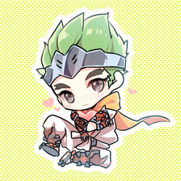

Mr.wang
这应该是一个团队的名字
很遗憾 我只是一个个人，并不是一个团队。这一部分实在不知道写啥了，那我就讲个小故事吧。我最喜欢的英雄的背景故事:
作为岛田忍者家族大名最年轻的儿子，源氏的一生荣华富贵。他对家族的非法生意毫无兴趣，尽管他精通并且享受忍者训练，但他依然热衷花花公子的生活。家族内的许多人都将源氏视为一个危险的累赘，并且怨恨其父亲一再地包庇和宽容。在家族大名意外死亡后，源氏的哥哥半藏，要求源氏在父亲创建的帝国中扮演一个更加积极的角色。但源氏拒绝了，他的拒绝激怒了半藏。两兄弟之间的怨恨最终导致了一场生死对决，源氏也因此差点送命。 半藏自认为杀死了自己的弟弟，但源氏被守望先锋救下并得到了齐格勒博士的照料。这一全球维和组织认为源氏将会在对付岛田家族的持久行动中扮演重要的角色。由于源氏的重伤使他无法正常战斗，守望先锋将会为他重建身躯但前提是源氏必须为守望先锋效命。源氏随后经过了一系列昂贵的机械化手术，强化了速度和敏捷性同时也强化了他超人的忍者技巧。在被变成一个活体武器后，源氏一心只想完成摧毁他父亲罪恶帝国的任务。 但随着时间的推移，源氏越发觉得自我矛盾。他厌恶自己的机械身躯，无法接受他现在的模样。当他的任务完成之后，他离开了守望先锋并游历世界希望能找到自己存在的意义。数年之后，他遇到了智械僧侣禅雅塔。尽管源氏一开始拒绝接受禅雅塔的教诲，但这位博爱的智械僧侣不会放弃。于是，禅雅塔成为了他的导师，并且在这位僧侣的引导下，源氏体内的人类和机械体验终于融合在了一起。他开始明白，尽管他有一副机械身躯，但他的人类灵魂是完整的，他渐渐意识到自己的新形态是给予自己的恩赐和力量。 现在，即使源氏无法看到自己最终的结局会是如何，但他第一次感受到了自由。